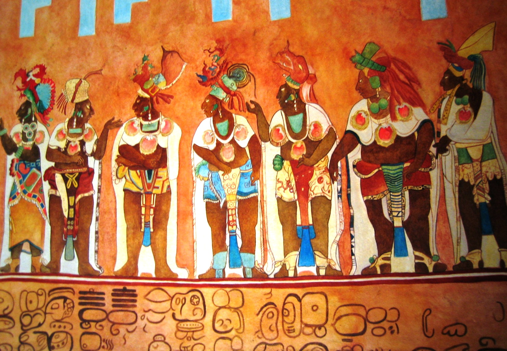
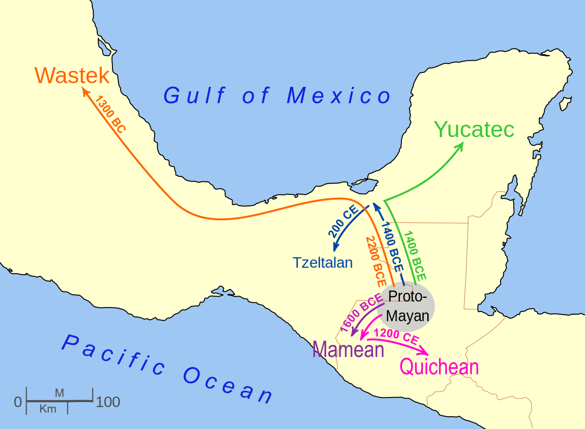

There were two reasons that drove me towards this project. When I was younger my brother introduced coding to me and I instantly liked it, which is why I decied to build a site to present my project. Secondly, I picked this particular subject because my family comes from central america so the Mayan culture is in my families history.
The Maya are indigenous people who reside in Mexico and countries in Central America such as Guatemala, Belize, El Salvador and Honduras. The term Maya actually comes from Mayapan which was an ancient city of Yucatan located in Mexico. Many believe that the Mayas vanished but as you’ll see that’s actually not true
 